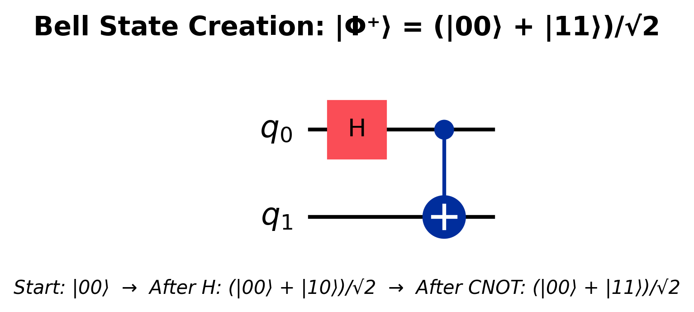

Quantum Entanglement¶
Time: 35 minutes | Difficulty: 🟡 Intermediate
Overview¶
Entanglement is what Einstein famously called "spooky action at a distance" - and it's arguably the most powerful resource in quantum computing. When qubits become entangled, they form correlations that are impossible to create classically, enabling computational capabilities far beyond traditional computers.
What you'll learn: - What entanglement really is (and isn't) - Bell states (maximally entangled pairs) - EPR paradox and Bell's theorem - How entanglement enables quantum algorithms - Creating and measuring entanglement
What Is Entanglement?¶
Classical Correlation vs Quantum Entanglement¶
Let's start with what entanglement is NOT.
Classical correlation example:
Take two coins, paint one red and one blue, put them in separate boxes, and shuffle:
Open box A: - If red: Box B must have blue - If blue: Box A must have red
This is classical correlation: The outcomes were determined before you looked. You just didn't know which was which.
Quantum entanglement is different!
Quantum Entanglement¶
Definition: Two or more qubits are entangled when their quantum states cannot be described independently, even when separated by vast distances.
Mathematical definition:
A two-qubit state |ψ⟩ is entangled if it cannot be written as:
|ψ⟩ = (α|0⟩ + β|1⟩) ⊗ (γ|0⟩ + δ|1⟩)
If it cannot be factored into independent single-qubit states, it's entangled!
Example of entangled state:
|Φ⁺⟩ = (|00⟩ + |11⟩)/√2
This CANNOT be written as single-qubit states!
Try: (a|0⟩ + b|1⟩)(c|0⟩ + d|1⟩) = ac|00⟩ + ad|01⟩ + bc|10⟩ + bd|11⟩
No values of a, b, c, d give you (|00⟩ + |11⟩)/√2
Key Properties of Entanglement¶
1. Non-local correlations - Measuring one qubit instantly affects the other - True even if qubits are light-years apart! - But: Can't send information faster than light (no paradox)
2. Measurement collapse - Measuring one qubit collapses both - If you measure first qubit as 0, second must be 0 (for |Φ⁺⟩) - Correlation is perfect, instantaneous, and quantum
3. No classical explanation - Bell's theorem proves these correlations can't be explained by hidden variables - Nature is genuinely probabilistic at quantum level
4. Fragile but powerful - Entanglement is easily destroyed (decoherence) - But enables quantum algorithms, teleportation, cryptography
The Bell States¶
Four Maximally Entangled States¶
The Bell states (or EPR pairs) are the four maximally entangled two-qubit states:
Φ⁺ (Phi-plus):
|Φ⁺⟩ = (|00⟩ + |11⟩)/√2
Measurement outcomes:
|00⟩ with 50% probability
|11⟩ with 50% probability
Perfect correlation: Both qubits always give same result!
Φ⁻ (Phi-minus):
Ψ⁺ (Psi-plus):
|Ψ⁺⟩ = (|01⟩ + |10⟩)/√2
Measurement outcomes:
|01⟩ with 50% probability
|10⟩ with 50% probability
Perfect anti-correlation: Qubits always give opposite results!
Ψ⁻ (Psi-minus):
Creating Bell States¶
Starting from |00⟩:
To create |Φ⁺⟩ = (|00⟩ + |11⟩)/√2:
Step 1: Apply Hadamard to first qubit
|00⟩ → (|0⟩ + |1⟩)/√2 ⊗ |0⟩ = (|00⟩ + |10⟩)/√2
Step 2: Apply CNOT (controlled-NOT) with first qubit as control
(|00⟩ + |10⟩)/√2 → (|00⟩ + |11⟩)/√2 = |Φ⁺⟩
Circuit diagram:
This is the most common entanglement circuit!

Figure 1: Quantum circuit for creating a Bell state |Φ⁺⟩. A Hadamard gate (H) creates superposition on the first qubit, followed by a CNOT gate that entangles the two qubits. The resulting state (|00⟩ + |11⟩)/√2 is maximally entangled.
Creating other Bell states:
From |Φ⁺⟩, apply: - Nothing → |Φ⁺⟩ - X on qubit 1 → |Ψ⁺⟩ - Z on qubit 0 → |Φ⁻⟩ - Z on qubit 0 and X on qubit 1 → |Ψ⁻⟩
Bell Measurement¶
Reverse process: Entangling gate + Hadamard transforms Bell states back to computational basis.
Why useful: Quantum teleportation, superdense coding, error correction.
EPR Paradox and Bell's Theorem¶
Einstein-Podolsky-Rosen (EPR) Paradox (1935)¶
Einstein, Podolsky, and Rosen posed a thought experiment to show quantum mechanics was "incomplete."
Their argument:
- Create entangled pair: |Φ⁺⟩ = (|00⟩ + |11⟩)/√2
- Separate the qubits by vast distance (light-years!)
- Measure first qubit → Get 0 or 1
- Second qubit instantly becomes the same!
EPR's conclusion: - Either information travels faster than light (impossible per relativity) - Or the particles had predetermined values all along (hidden variables) - Therefore: Quantum mechanics is incomplete!
Einstein's quote: "Spooky action at a distance" - he didn't believe it!
Bell's Theorem (1964)¶
John Stewart Bell proved EPR wrong with an elegant theorem:
Statement: No theory of local hidden variables can reproduce all predictions of quantum mechanics.
What this means: - There are no "hidden instructions" carried by particles - Quantum correlations are stronger than any classical correlation - Nature is genuinely probabilistic and non-local
Bell Inequality Test¶
Classical prediction (hidden variables):
For certain combinations of measurements:
Quantum mechanics predicts:
Experiments: Performed thousands of times since 1970s - Result: Quantum mechanics wins! Bell inequality is violated. - 2022 Nobel Prize awarded to Aspect, Clauser, and Zeilinger for experimental verification
Implications: 1. Nature is genuinely quantum (no hidden variables) 2. Quantum correlations are stronger than classical 3. This is what makes quantum computing possible!
Types of Entanglement¶
Bipartite Entanglement (Two Qubits)¶
Product state (not entangled):
Entangled state:
Measuring entanglement: - Concurrence: Ranges from 0 (separable) to 1 (maximally entangled) - Entropy of entanglement: Information theoretic measure
Multipartite Entanglement (3+ Qubits)¶
Multiple qubits can be entangled in complex ways.
GHZ State (Greenberger-Horne-Zeilinger):
|GHZ⟩ = (|000⟩ + |111⟩)/√2
All three qubits maximally entangled
Measurement: All 0s or all 1s (never mixed)
W State:
|W⟩ = (|001⟩ + |010⟩ + |100⟩)/√3
Different entanglement structure than GHZ
More robust to qubit loss
Difference: - GHZ: Lose one qubit → remaining qubits not entangled - W: Lose one qubit → remaining qubits still entangled!
Graph states: - Qubits at vertices, entanglement along edges - Used in quantum error correction - Measurement-based quantum computing
Cluster States¶
Definition: Special type of graph state used for one-way quantum computing.
Properties: - Create large entangled state upfront - Perform computation by sequential measurements - Different paradigm from gate-based computing
Mathematical Description¶
Tensor Product (Separable States)¶
Two independent qubits:
|ψ⟩ = |ψ₁⟩ ⊗ |ψ₂⟩
Example:
|+⟩ ⊗ |0⟩ = (|0⟩ + |1⟩)/√2 ⊗ |0⟩
= (|00⟩ + |10⟩)/√2
This is NOT entangled (it's a product state)
Dimension: 2 × 2 = 4 dimensional space
Entangled States (Non-Separable)¶
Cannot be written as tensor product:
Density Matrices¶
Pure separable state:
Pure entangled state:
Test for entanglement: - Compute partial trace - Check if result is pure or mixed - Mixed → Entangled!
Schmidt Decomposition¶
Theorem: Any pure two-qubit state can be written:
|ψ⟩ = λ₀|a₀⟩|b₀⟩ + λ₁|a₁⟩|b₁⟩
where {|a₀⟩, |a₁⟩} and {|b₀⟩, |b₁⟩} are orthonormal
λ₀, λ₁ ≥ 0 are Schmidt coefficients
Entanglement measure: - If only one λᵢ ≠ 0: Separable - If both λᵢ ≠ 0: Entangled - If λ₀ = λ₁: Maximally entangled
Applications of Entanglement¶
1. Quantum Teleportation¶
Goal: Transfer quantum state from Alice to Bob using: - Shared entangled pair - Classical communication (2 bits)
Protocol:
1. Alice and Bob share |Φ⁺⟩ = (|00⟩ + |11⟩)/√2
2. Alice has unknown state |ψ⟩ = α|0⟩ + β|1⟩ to send
3. Alice performs Bell measurement on her qubits
4. Alice sends 2 classical bits to Bob
5. Bob applies correction based on received bits
6. Bob now has state |ψ⟩!
Key points: - Original state destroyed (no-cloning theorem) - Requires classical communication (no faster-than-light) - State transferred without physically moving qubit!
Real experiments: Successfully teleported over 100s of kilometers!
2. Superdense Coding¶
Goal: Send 2 classical bits using 1 qubit!
Protocol:
1. Alice and Bob share |Φ⁺⟩
2. Alice wants to send 2 bits: 00, 01, 10, or 11
3. Alice applies gate to her qubit based on bits:
- 00: Nothing (Identity) → |Φ⁺⟩
- 01: X gate → |Ψ⁺⟩
- 10: Z gate → |Φ⁻⟩
- 11: ZX gates → |Ψ⁻⟩
4. Alice sends her qubit to Bob
5. Bob performs Bell measurement
6. Bob determines which 2 bits were sent!
Efficiency: 2 classical bits per 1 qubit (double the classical rate!)
3. Quantum Key Distribution (QKD)¶
BB84 Protocol (simplified):
Entanglement ensures secure key distribution: - Any eavesdropper disturbs entangled state - Disturbance is detectable - Guaranteed secure communication!
Real-world: Banks and governments use this today!
4. Quantum Algorithms¶
Entanglement is essential for:
Shor's Algorithm (Factoring): - Entangles work and answer qubits - Creates quantum Fourier transform - Exponential speedup relies on entanglement
Grover's Search: - Entangles target state with other qubits - Amplitude amplification through entanglement - Quadratic speedup
VQE (Variational Quantum Eigensolver): - Entangles qubits to represent molecular states - Enables quantum chemistry simulations
QAOA (Quantum Approximate Optimization): - Entanglement creates correlations - Solves combinatorial optimization problems
5. Quantum Error Correction¶
Problem: Qubits decohere and lose information.
Solution: Spread quantum information across many entangled qubits!
Example: 3-qubit bit-flip code
If one qubit flips, can detect and correct using measurements that don't reveal the state.
Advanced codes: - Surface code: Most promising for large-scale quantum computers - Uses 2D lattice of entangled qubits - Local error detection
Creating Entanglement in Practice¶
Controlled Gates¶
CNOT (Controlled-NOT):
Most common for creating entanglement:
Matrix:
CZ (Controlled-Z):
Alternative entangling gate:
Physical implementations: - Superconducting: Tune qubit frequencies to enable interaction - Trapped ions: Shared motional modes couple ions - Neutral atoms: Rydberg blockade creates entanglement - Photonic: Beam splitters and interference
Entanglement Verification¶
How do we know qubits are entangled?
1. State tomography: - Measure in multiple bases - Reconstruct density matrix - Check if separable or entangled - Expensive: 4ⁿ measurements for n qubits!
2. Witness operators: - Measure expectation values - If violates classical bound → Entangled - More efficient than full tomography
3. Bell inequality test: - Perform CHSH experiment - Calculate S value - If S > 2 → Entangled (classical limit is 2)
Entanglement as a Resource¶
Quantum Resource Theory¶
Key idea: Entanglement is like a fuel that quantum algorithms consume.
Free operations: - Local operations (gates on individual qubits) - Classical communication (LOCC protocols)
Costly operations: - Creating entanglement - Maintaining entanglement (fighting decoherence)
Quantifying entanglement: - Entropy of entanglement: S = −Tr(ρₐ log ρₐ) - Entanglement cost: How much Bell pairs needed to create state - Distillable entanglement: How much pure entanglement can be extracted
Entanglement Budget¶
Quantum algorithm analysis:
Algorithm entanglement requirement:
- Depth: How many layers of entangling gates
- Width: How many qubits need to be entangled
- Quality: How pure must the entanglement be
Example - Grover's Search on N items:
- O(√N) entangling operations
- O(log N) qubits entangled
Practical constraint: More entanglement → More error → Need error correction → More physical qubits!
Common Misconceptions¶
Misconception 1: "Entanglement enables faster-than-light communication"¶
Truth: No! You cannot send information faster than light with entanglement.
Why: - Individual measurements give random results - Correlation only visible when comparing results classically - Classical communication needed → Speed limited by light
Relativity is safe!
Misconception 2: "Measuring one entangled qubit 'tells' the other what to be"¶
Truth: No causal influence. Better description: The pair always had correlated properties, only revealed upon measurement.
But: No hidden variable theory works (Bell's theorem). It's genuinely quantum!
Misconception 3: "More entanglement = More powerful"¶
Truth: Depends on the problem!
Examples: - Some algorithms need lots of entanglement (Shor's) - Some need little (certain VQE circuits) - Classical simulation difficulty often relates to entanglement
Misconception 4: "Entanglement is fragile - useless for practical applications"¶
Truth: Fragile yes, but we have solutions!
Solutions: - Quantum error correction - Decoherence-free subspaces - Dynamical decoupling - Better qubit engineering
Real applications work today: QKD, quantum sensors, small quantum computers
Summary: Quantum Entanglement¶
What is entanglement? - Correlation stronger than any classical correlation - Qubits cannot be described independently - Measured states are perfectly correlated
Bell states: - Four maximally entangled two-qubit states - Created with H + CNOT gates - Foundation for quantum protocols
EPR and Bell: - No hidden variable theory works - Quantum correlations are real and non-local - Experimentally verified (Nobel Prize 2022)
Applications: - Quantum teleportation - Superdense coding - Quantum cryptography (QKD) - Quantum algorithms (Shor's, Grover's, etc.) - Quantum error correction
Challenges: - Fragile (decoherence) - Difficult to create and maintain - Verification is expensive - But: Essential for quantum advantage!
Check Your Understanding¶
Question 1: Can the state (|00⟩ + |01⟩)/√2 be written as a product of two single-qubit states?
Answer
Yes! (|00⟩ + |01⟩)/√2 = |0⟩ ⊗ (|0⟩ + |1⟩)/√2 = |0⟩ ⊗ |+⟩. This is NOT entangled, just a product state.Question 2: What gates do you need to create a Bell state |Φ⁺⟩ from |00⟩?
Answer
Hadamard gate on first qubit, then CNOT with first qubit as control: |00⟩ → H₀ → (|00⟩ + |10⟩)/√2 → CNOT → (|00⟩ + |11⟩)/√2 = |Φ⁺⟩Question 3: If two qubits are in state |Φ⁺⟩ = (|00⟩ + |11⟩)/√2, you measure the first qubit and get 1. What will you measure for the second qubit?
Answer
You'll definitely measure 1 (100% probability). The entangled state ensures perfect correlation - both qubits always give the same result for |Φ⁺⟩.Question 4: Can you use entanglement to send a message faster than light?
Answer
No! Individual measurement results are random. The correlation only becomes apparent when you compare results using classical communication (limited by speed of light). Relativity is preserved.Question 5: What's the difference between GHZ and W states?
Answer
- **GHZ:** (|000⟩ + |111⟩)/√2 - Maximally entangled but fragile. Losing one qubit destroys all entanglement. - **W:** (|001⟩ + |010⟩ + |100⟩)/√3 - More robust. Remaining qubits stay entangled if one is lost. Different types of multipartite entanglement!What's Next?¶
Now that you understand entanglement, let's explore how measurement works in quantum systems:
Next: Quantum Measurement - Projective measurements - POVM (Generalized measurements) - Measurement basis choice - Quantum state tomography
Related: - The Qubit - Single qubit states - Multi-Qubit Gates - Creating entanglement
Additional Resources¶
Papers: - Einstein, Podolsky, Rosen: "Can Quantum-Mechanical Description of Physical Reality Be Considered Complete?" (1935) - John Bell: "On the Einstein Podolsky Rosen Paradox" (1964)
Books: - Quantum Entanglement by Jed Brody - Entanglement by Amir D. Aczel (Popular science)
Videos: - Bell's Theorem: The Quantum Venn Diagram Paradox - MinutePhysics - Quantum Entanglement - PBS Space Time
Interactive: - Bell's Theorem Visualization - Try creating Bell states in Quirk
💡 Key Insight: Entanglement is THE feature that separates quantum from classical computing. It's not just parallelism (superposition), it's the correlations between qubits that enable quantum algorithms to solve problems classical computers cannot!
Ready to understand how measurement affects quantum systems? Final foundational topic ahead! 🚀